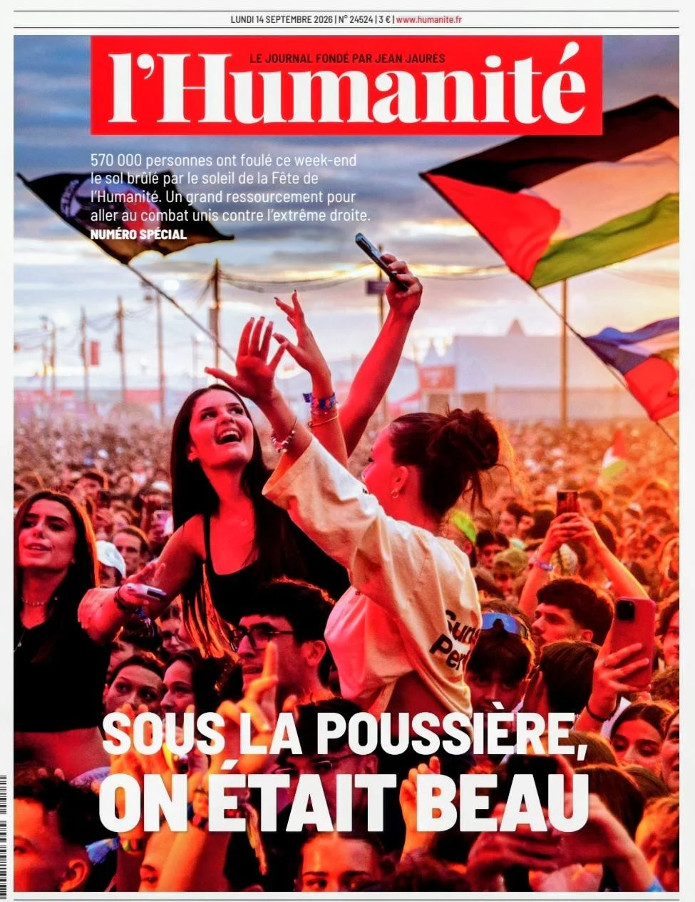
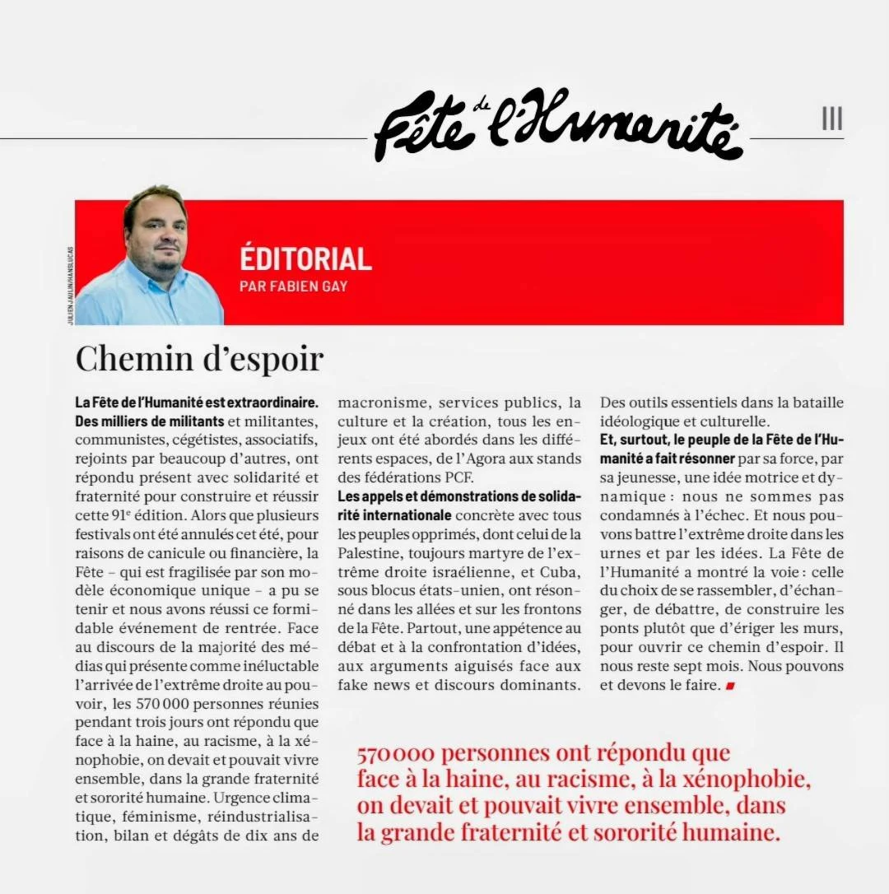

Publication du PCF 79
Fête de l’Humanité 2026. « Faire face à la haine, au racisme et à la xénophobie »
Date indiquée par Facebook · 14 septembre 2026
Texte conservé avec la publication
Fête de l'Humanité 2026
570 000 à faire face à la haine, au racisme et à la xénophobie.
Repères éditoriaux
Notre publication de retour sur la Fête de l’Humanité porte ces mots. Les deux images accompagnent le bilan de la fédération. Le chiffre de fréquentation figure dans la légende d’origine.


Sources
Archive rouge · export Facebook · AR-0002-FB-00692
À lire aussi · La Fête de l’Humanité 2026 à l’affiche de Laura Normand